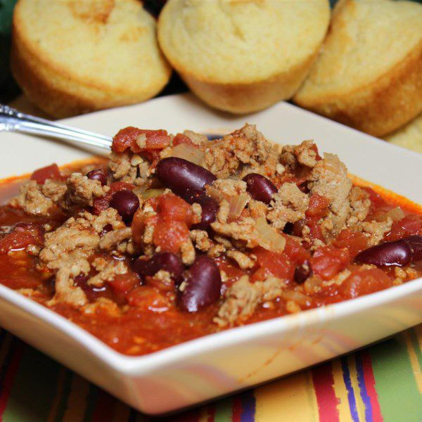

Simple Turkey Chili

Description
This turkey chili recipe is very simple but hearty with plenty of flavors
— it's even better on the second day! I serve this chili with low-fat
Cheddar cheese and low-fat sour cream. It's also delicious with crackers.
Ingredients
- 1 ½ teaspoons olive oil
- 1 pound ground turkey
- 1 onion, chopped
- 2 cups water
- 1 (28 ounce) can canned crushed tomatoes
-
1 (16 ounce) can canned kidney beans - drained, rinsed, and mashed
- 1 tablespoon garlic, minced
- 2 tablespoons chili powder
- ½ teaspoon paprika
- ½ teaspoon dried oregano
- ½ teaspoon ground cayenne pepper
- ½ teaspoon ground cumin
- ½ teaspoon salt
- ½ teaspoon ground black pepper
Steps
-
Heat oil in a large pot over medium heat. Add turkey; cook and stir
until evenly browned, 6 to 8 minutes. Stir in onion and cook until
tender.
-
Add water; mix in tomatoes, kidney beans, and garlic. Stir in chili
powder, paprika, oregano, cayenne pepper, cumin, salt, and pepper.
-
Bring to a boil. Reduce heat to low, cover, and simmer for 30 minutes.